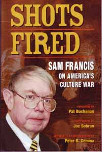

Shots Fired
Sam Francis on America's Culture War
FGF Books, 2006, 364 pp., soft cover, $18.95 (postpaid).
|  |
| Buy |
|---|
“Sam Francis was born with three great gifts: one of the finest minds of his generation, wit and humor, and a brave heart to pursue and tell the truth.” So begins Patrick Buchanan’s generous and affectionate foreword to the best collection of Sam Francis articles now available, Shots Fired. Mr. Buchanan was right, of course, and even people who never met Sam know it. Few writers express themselves as fully and authentically as Sam did, and to loyal fans across the country, Sam was a vivid presence without even leaving the page. Even a cursory dip into this volume will show why.
Sam’s friend, colleague, and posthumous editor Peter Gemma, who undertook the difficult job of choosing which of Sam’s hundreds of columns and articles to include, has organized this book into 16 different sections with themes like Lincoln's Legacy, Symbols — Southern and Otherwise, the Second Amendment, Education, History, and The Grand Old Stupid Party. By the time of his unexpected death almost exactly two years ago on Feb. 15, 2005, however, it was clear that of all the subjects on which Sam wrote so forcefully none was more important to him than the fate of the West. As Mr. Buchanan writes:
Sam Francis believed Western Civilization was superior, that it was the unique achievement of European peoples, that they alone could have done it. And he would defend it and the race and people he believed would alone sustain it, no matter the cost.
Sam also recognized that whites everywhere — not just in the United States but in Europe, Canada, and Australia — had lost faith in themselves and were ripe for dispossession. He feared that if Third-Worlders kept swarming into traditional white homelands, a great and ancient civilization would be disfigured or even lost. And this leads to the question readers of this magazine will ask about Shots Fired: Why does it include nothing from American Renaissance? Sam’s by-line appeared 14 times in AR — usually on the cover — and this does not include his pseudonymous writing. It was in AR that Sam wrote about race at greatest length and with greatest candor, and it is no coincidence that it was a lecture at the first AR conference in 1994 that finally lead to his dismissal from the Washington Times.
For people who are already familiar with his writing in AR, however, the absence of Sam’s pieces is, if anything, an advantage because it makes more room for his trenchant observations on other subjects: Republicans, Neo-conservatives, gun control, and many aspects of what has been called the culture wars.
However, what Sam hated most was to see a great people — his people — reduced from the nobility and stature of the Founders and of his Confederate ancestors to that of cattle, content to be fattened and milked. His life’s work was a call to arms, and when that went unanswered, a call at least to consciousness. Sam believed Americans still had the capacity to live as free men, to take back the culture and dignity their enemies within have worked so hard to undermine. The fight must now go on without him, but Shots Fired is an invaluable broadside against forces that never sleep.
(Excerpted from a review of Shots Fired by Jared Taylor in American Renaissance, March 2007.)